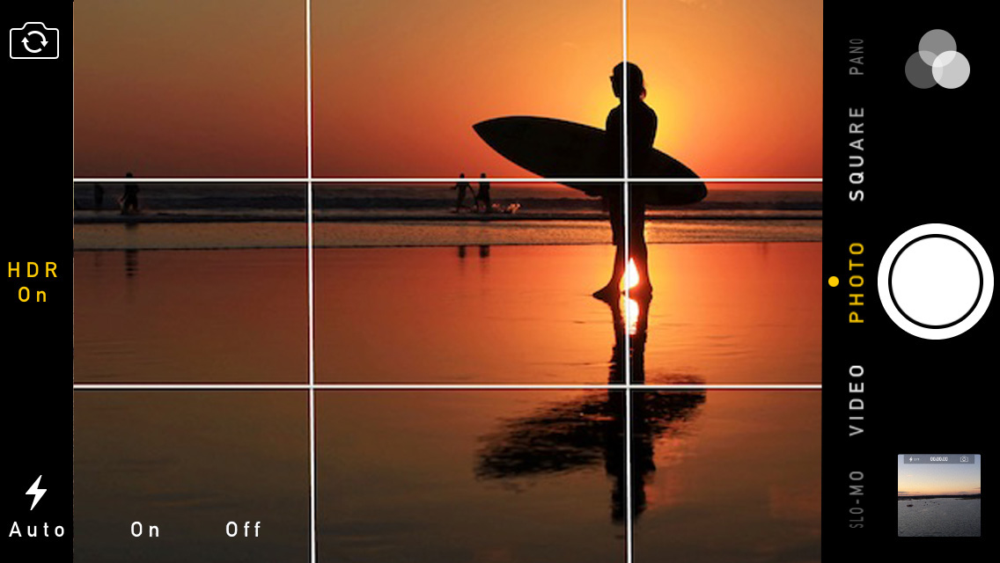
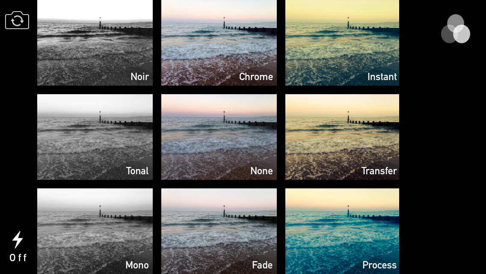
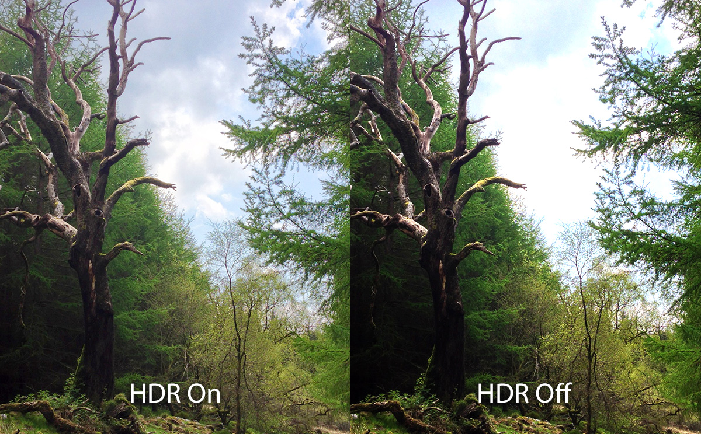
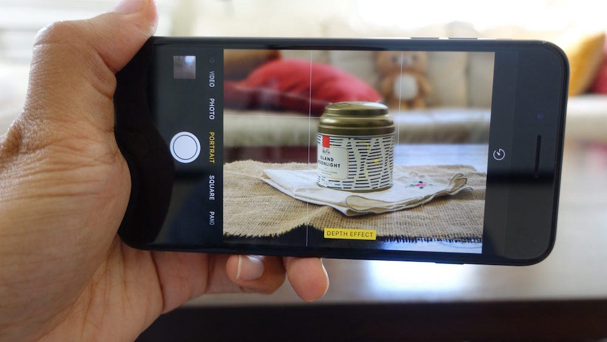

5 tips that will help you take better iPhone photos
Here are some tips that every photographer would like to know
22/11/2018
1. Camera grid
3. Filters
5. HDR
2. Focus
Make sure you tap on the screen on something close to the camera before you take a photo, so the focus will be on it. If you want the focus to be on the background, just tap a background object and what is placed in the frod will become blurry.
4."Find light. No flash"